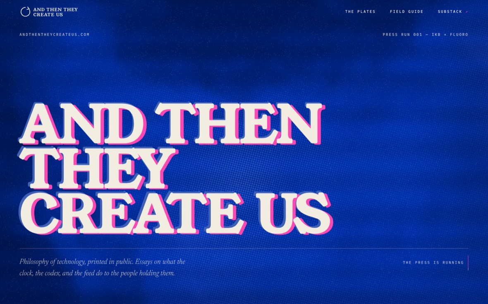
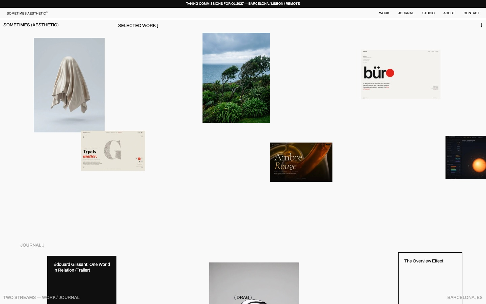
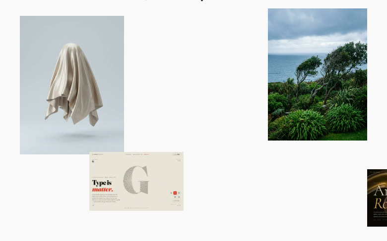
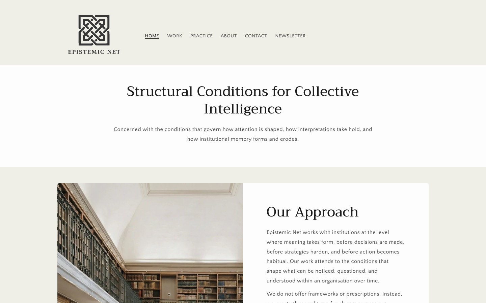
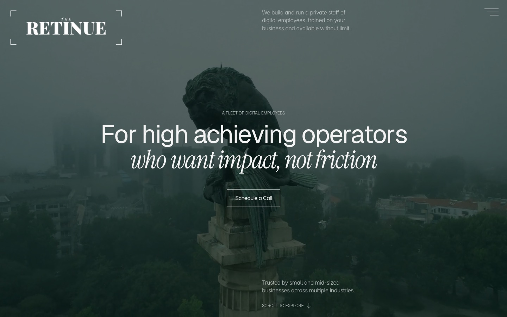
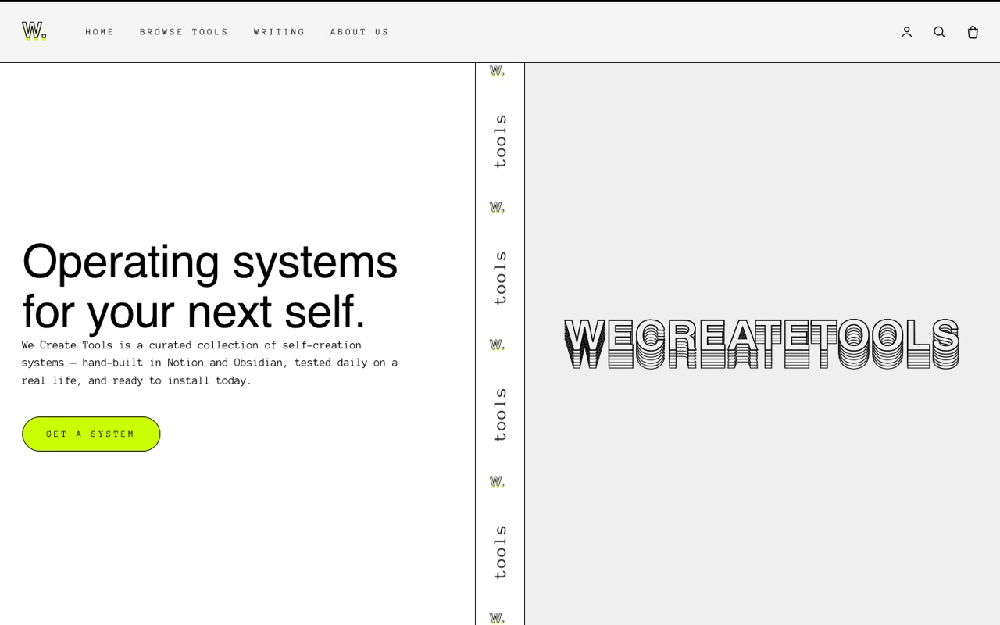

I make things that make me back. A press that cannot print the same page twice. A studio with a standing quarrel against minimalism. A net for arguments that deserve better handling than a feed gives them. A practice that composes a retinue for one principal at a time. A toolshop for the systems I could not buy. Five ventures, one loom, and running through all of it the same suspicion, held with more confidence than I should probably admit: we create tools, and then they create us.
WEFT I / V · THE PRESS · IMPRESSION Nº ···
And Then They Create Us
The press. Essays run like risograph plates, misregistered on purpose, since an idea never lands the same way twice.

WEFT II / V · THE STUDIO
Sometimes Aesthetic®
The studio. Brand identity, art direction and web design from Barcelona and Lisbon, with a curriculum of films instead of a mood board and a standing argument with default minimalism.
TAULA

ONLY IN
IMAGERY

LISBON
REMOTE
WEFT III / V · THE NET
Epistemic Net
DIAGNOSTIC, NOT PRESCRIPTIVE
The net for ideas. Para-academic writing on how knowing actually works, from framework salvage to the sociology of certainty, kept a few degrees cooler than I am.

WEFT IV / V · THE PRACTICE
The Retinue
A PRACTICE COMPOSED FOR ONE PRINCIPAL AT A TIME
The consulting practice. I compose a working retinue for one principal at a time, drawn from the same infrastructure I trust my own days to. It is deliberately quiet. The best of what it does is never seen.

WEFT V / V · THE TOOLSHOP
We Create Tools
The toolshop. Notion systems I built for my own head first and sell with a straight face, a life turned playable among them. Friends don’t let friends use shitty tools.

THE PATTERN BOOK · WRITING
I keep a pattern book.
A weaver’s pattern book holds the drafts: the notation for every cloth the loom can make. Mine holds essays. Notes on the tools I live inside, the scaffolding I think with, and what both are quietly making of me.
THE SELVEDGE